<!DOCTYPE html>
<html lang="id">
<head>
    <meta charset="UTF-8">
    <meta name="viewport" content="width=device-width, initial-scale=1.0">
    <title>Petualangan Flora & Fauna Indonesia</title>
    
    <!-- React & Babel -->
    <script src="https://unpkg.com/react@18/umd/react.production.min.js" crossorigin></script>
    <script src="https://unpkg.com/react-dom@18/umd/react-dom.production.min.js" crossorigin></script>
    <script src="https://unpkg.com/@babel/standalone/babel.min.js"></script>
    
    <!-- Tailwind CSS -->
    <script src="https://cdn.tailwindcss.com"></script>
    
    <!-- FontAwesome -->
    <link href="https://cdnjs.cloudflare.com/ajax/libs/font-awesome/6.0.0/css/all.min.css" rel="stylesheet">

    <style>
        body { font-family: 'Comic Sans MS', 'Chalkboard SE', 'Segoe UI', sans-serif; background-color: #f0fdf4; }
        .map-container { position: relative; width: 100%; max-width: 900px; margin: 0 auto; overflow: hidden; border-radius: 12px; box-shadow: 0 10px 15px -3px rgba(0, 0, 0, 0.1); }
        .map-image { width: 100%; height: auto; display: block; }
        
        .map-area {
            position: absolute;
            cursor: pointer;
            transition: all 0.3s ease;
            display: flex;
            align-items: center;
            justify-content: center;
            border: 3px dashed transparent;
            border-radius: 16px;
        }
        .map-area:hover {
            background-color: rgba(59, 130, 246, 0.3);
            border-color: rgba(59, 130, 246, 0.8);
            backdrop-filter: blur(2px);
        }
        .map-label {
            background: rgba(255, 255, 255, 0.9);
            padding: 4px 12px;
            border-radius: 20px;
            font-weight: bold;
            color: #1e40af;
            box-shadow: 0 2px 4px rgba(0,0,0,0.2);
            opacity: 0;
            transition: opacity 0.3s;
            pointer-events: none;
            text-align: center;
            font-size: 14px;
        }
        .map-area:hover .map-label { opacity: 1; transform: scale(1.1); }
        
        .modal-overlay { background-color: rgba(0, 0, 0, 0.5); backdrop-filter: blur(4px); }
        .fade-in { animation: fadeIn 0.4s ease-in-out; }
        @keyframes fadeIn { from { opacity: 0; transform: translateY(10px); } to { opacity: 1; transform: translateY(0); } }
        

        .flora-fauna-card { background:#fff; border-radius:18px; overflow:hidden; border:1px solid #d1fae5; box-shadow:0 4px 12px rgba(0,0,0,.06); }
        .flora-fauna-card img { width:100%; height:190px; object-fit:cover; display:block; }
        .flora-fauna-card .card-body { padding:16px; }
        .flora-fauna-card .region-tag { display:inline-block; padding:4px 10px; border-radius:999px; background:#dcfce7; color:#166534; font-size:12px; font-weight:700; margin-top:8px; }
        .material-section { scroll-margin-top:160px; }
        .tab-btn { transition: all 0.2s; }
        .tab-btn:disabled { opacity: 0.6; cursor: not-allowed; }
    </style>
</head>
<body>
    <div id="root"></div>

    <script type="text/babel">
        const { useState, useEffect } = React;

        // --- DATA ---
        const regionData = {
            asiatis: {
                title: 'Wilayah Asiatis (Barat)',
                desc: 'Meliputi Pulau Sumatra, Jawa, dan Kalimantan. Dibatasi oleh Garis Wallace.',
                flora: 'Kayu Jati, Meranti, Mahoni, Rafflesia Arnoldi, Mangrove.',
                fauna: 'Badak Bercula Satu, Orang Utan, Harimau Sumatra, Burung Merak, Jalak Bali.'
            },
            peralihan: {
                title: 'Wilayah Peralihan (Tengah)',
                desc: 'Meliputi Pulau Sulawesi dan Kepulauan Nusa Tenggara. Berada di antara Garis Wallace dan Garis Weber.',
                flora: 'Sabana, Stepa.',
                fauna: 'Anoa, Babirusa, Burung Maleo.'
            },
            australis: {
                title: 'Wilayah Australis (Timur)',
                desc: 'Meliputi Pulau Papua dan Kepulauan Maluku. Dibatasi oleh Garis Weber.',
                flora: 'Anggrek, Sagu.',
                fauna: 'Burung Cendrawasih, Kasuari, Kangguru.'
            }
        };

        const quizQuestions = [
            { q: 'Faktor yang memengaruhi persebaran flora dan fauna terkait dengan suhu dan curah hujan disebut?', options: ['Kondisi Tanah', 'Iklim', 'Relief Daratan', 'Formasi Geologi'], answer: 1 },
            { q: 'Garis khayal yang memisahkan fauna wilayah Barat (Asiatis) dan Tengah (Peralihan) adalah?', options: ['Garis Weber', 'Garis Khatulistiwa', 'Garis Wallace', 'Garis Astronomis'], answer: 2 },
            { q: 'Garis khayal yang memisahkan wilayah Tengah (Peralihan) dan Timur (Australis) adalah?', options: ['Garis Wallace', 'Garis Weber', 'Garis Lintang', 'Garis Bujur'], answer: 1 },
            { q: 'Hewan endemik yang menjadi ciri khas wilayah Peralihan di Sulawesi adalah?', options: ['Orang Utan & Harimau', 'Anoa & Babirusa', 'Kangguru & Kasuari', 'Badak Bercula Satu'], answer: 1 },
            { q: 'Burung Cendrawasih yang memiliki bulu indah merupakan fauna khas dari wilayah?', options: ['Asiatis', 'Peralihan', 'Australis', 'Eropa'], answer: 2 },
            { q: 'Tumbuhan endemik yang sangat langka dan tumbuh di Pulau Sumatra adalah?', options: ['Sagu', 'Anggrek', 'Sabana', 'Rafflesia Arnoldi'], answer: 3 },
            { q: 'Daerah Nusa Tenggara yang memiliki curah hujan rendah banyak ditumbuhi oleh tumbuhan jenis?', options: ['Hutan Hujan Tropis', 'Sabana dan Stepa', 'Hutan Mangrove', 'Hutan Lumut'], answer: 1 },
            { q: 'Badak bercula satu, Orang Utan, dan Harimau Sumatra termasuk dalam kelompok fauna tipe?', options: ['Asiatis (Barat)', 'Peralihan (Tengah)', 'Australis (Timur)', 'Oseania'], answer: 0 },
            { q: 'Tumbuhan Sagu dan Anggrek banyak ditemukan mendominasi di wilayah?', options: ['Sumatra & Jawa', 'Papua & Maluku', 'Sulawesi', 'Kalimantan'], answer: 1 },
            { q: 'Ketinggian tempat atau bentang alam (seperti pegunungan vs pantai) yang memengaruhi persebaran kehidupan disebut faktor?', options: ['Iklim', 'Kondisi Tanah', 'Relief Daratan', 'Formasi Geologi'], answer: 2 }
        ];

        // --- COMPONENTS ---

        // 1. Modal Component
        const Modal = ({ data, onClose }) => {
            if (!data) return null;
            return (
                <div className="fixed inset-0 z-50 flex items-center justify-center modal-overlay p-4">
                    <div className="bg-white rounded-3xl shadow-2xl w-full max-w-md overflow-hidden fade-in border-4 border-green-500">
                        <div className="bg-green-500 px-6 py-4 flex justify-between items-center text-white">
                            <h2 className="text-xl font-bold">{data.title}</h2>
                            <button onClick={onClose} className="hover:text-red-200 text-2xl transition"><i className="fa-solid fa-circle-xmark"></i></button>
                        </div>
                        <div className="p-6">
                            <p className="text-gray-600 mb-4 text-sm italic">{data.desc}</p>
                            
                            <div className="mb-4 bg-green-50 p-4 rounded-xl border border-green-200">
                                <h3 className="font-bold text-green-700 mb-2"><i className="fa-solid fa-leaf mr-2"></i>Flora Khas</h3>
                                <p className="text-sm text-gray-800">{data.flora}</p>
                            </div>
                            
                            <div className="bg-orange-50 p-4 rounded-xl border border-orange-200">
                                <h3 className="font-bold text-orange-700 mb-2"><i className="fa-solid fa-paw mr-2"></i>Fauna Khas</h3>
                                <p className="text-sm text-gray-800">{data.fauna}</p>
                            </div>
                        </div>
                    </div>
                </div>
            );
        };

        // 2. Materi Component
        const Materi = ({ onComplete }) => {
            const [selectedRegion, setSelectedRegion] = useState(null);

            return (
                <div className="fade-in max-w-4xl mx-auto space-y-6">
                    <div className="bg-white p-6 rounded-2xl shadow-md border-t-4 border-blue-500">
                        <h2 className="text-2xl font-bold text-blue-800 mb-4"><i className="fa-solid fa-book-open mr-2"></i>Faktor Persebaran Flora & Fauna</h2>
                        <div className="grid grid-cols-1 md:grid-cols-2 gap-4">
                            <div className="bg-blue-50 p-4 rounded-xl">
                                <h3 className="font-bold text-blue-700"><i className="fa-solid fa-cloud-sun-rain mr-2"></i>1. Iklim</h3>
                                <p className="text-sm text-gray-600">Suhu, kelembapan, dan curah hujan sangat menentukan jenis tumbuhan yang bisa hidup.</p>
                            </div>
                            <div className="bg-amber-50 p-4 rounded-xl">
                                <h3 className="font-bold text-amber-700"><i className="fa-solid fa-seedling mr-2"></i>2. Kondisi Tanah</h3>
                                <p className="text-sm text-gray-600">Kesuburan, mineral, dan tekstur tanah (contoh: tanah vulkanik vs kapur).</p>
                            </div>
                            <div className="bg-emerald-50 p-4 rounded-xl">
                                <h3 className="font-bold text-emerald-700"><i className="fa-solid fa-mountain mr-2"></i>3. Relief Daratan</h3>
                                <p className="text-sm text-gray-600">Ketinggian tempat (pantai, dataran rendah, pegunungan) memengaruhi suhu.</p>
                            </div>
                            <div className="bg-purple-50 p-4 rounded-xl">
                                <h3 className="font-bold text-purple-700"><i className="fa-solid fa-globe mr-2"></i>4. Formasi Geologi</h3>
                                <p className="text-sm text-gray-600">Sejarah pergerakan benua yang memisahkan atau menyatukan daratan di masa lalu.</p>
                            </div>
                        </div>
                    </div>

                    <div className="bg-white p-6 rounded-2xl shadow-md border-t-4 border-green-500">
                        <h2 className="text-2xl font-bold text-green-800 mb-2"><i className="fa-solid fa-map-location-dot mr-2"></i>Peta Persebaran</h2>
                        <p className="text-sm text-gray-500 mb-4">Klik area transparan pada peta di bawah untuk melihat flora dan fauna khas setiap wilayah!</p>
                        
                        <div className="map-container relative bg-blue-100/50">
                            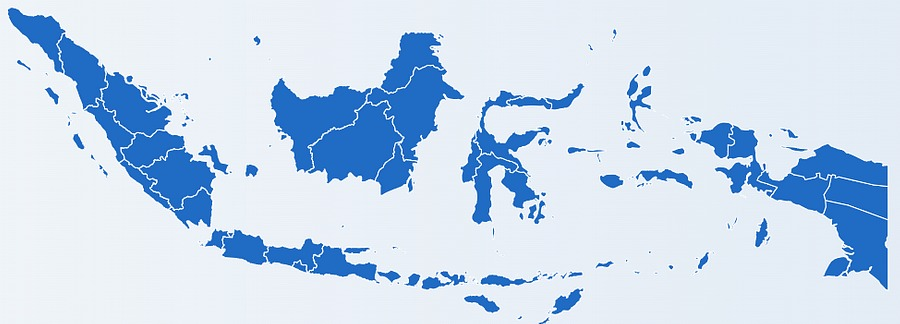 { e.currentTarget.onerror = null; e.currentTarget.src = "PASTE_LINK_GDRIVE_PETA_DI_SINI"; }} />
                            
                            {/* Overlay 1: Asiatis (Barat) */}
                            <div 
                                className="map-area" 
                                style={{ left: '2%', top: '5%', width: '42%', height: '85%' }}
                                onClick={() => setSelectedRegion(regionData.asiatis)}
                            >
                                <span className="map-label">Wilayah Asiatis<br/><small>(Barat)</small></span>
                            </div>

                            {/* Overlay 2: Peralihan (Tengah) */}
                            <div 
                                className="map-area" 
                                style={{ left: '45%', top: '15%', width: '20%', height: '75%' }}
                                onClick={() => setSelectedRegion(regionData.peralihan)}
                            >
                                <span className="map-label">Wilayah Peralihan<br/><small>(Tengah)</small></span>
                            </div>

                            {/* Overlay 3: Australis (Timur) */}
                            <div 
                                className="map-area" 
                                style={{ left: '66%', top: '15%', width: '32%', height: '75%' }}
                                onClick={() => setSelectedRegion(regionData.australis)}
                            >
                                <span className="map-label">Wilayah Australis<br/><small>(Timur)</small></span>
                            </div>
                        </div>
                    </div>

                    <section className="material-section bg-white p-6 rounded-2xl shadow-md border-t-4 border-emerald-500">
                        <h2 className="text-2xl font-bold text-emerald-800 mb-2"><i className="fa-solid fa-leaf mr-2"></i>Kartu Flora Indonesia</h2>
                        <p className="text-gray-600 mb-5">Amati foto dan baca ciri-ciri serta persebaran flora berikut.</p>
                        <div className="grid grid-cols-1 md:grid-cols-2 lg:grid-cols-3 gap-5">
                          <article className="flora-fauna-card">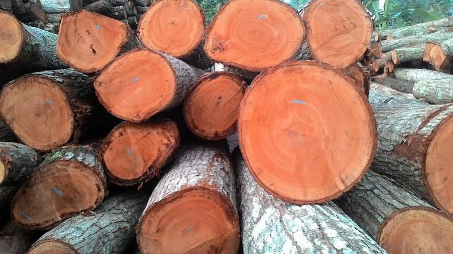{e.currentTarget.src="LINK_GDRIVE_FOTO_KAYU_DI_SINI"}}/><div className="card-body"><h3 className="font-bold text-lg text-green-800">Kayu Jati, Meranti, dan Mahoni</h3><p className="text-sm text-gray-700 mt-2">Berbagai jenis tumbuhan kayu bernilai ekonomi tinggi. Tumbuh subur di hutan hujan tropis yang basah dengan curah hujan dan kelembapan cukup tinggi. Jati dimanfaatkan sebagai bahan kayu, begitu pula meranti dan kruing.</p><p className="text-sm mt-2"><b>Persebaran:</b> Indonesia bagian Barat; jati banyak ditemukan di Jawa Tengah.</p><span className="region-tag">Wilayah Asiatis</span></div></article>
                          <article className="flora-fauna-card">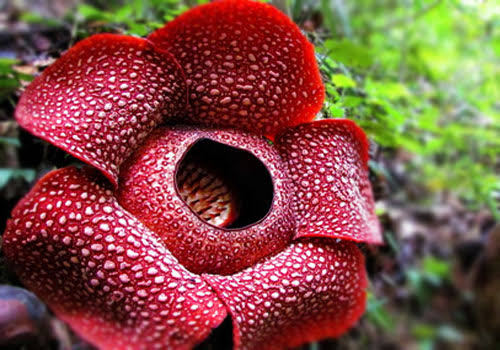{e.currentTarget.src="LINK_GDRIVE_FOTO_RAFFLESIA_DI_SINI"}}/><div className="card-body"><h3 className="font-bold text-lg text-green-800">Rafflesia Arnoldi</h3><p className="text-sm text-gray-700 mt-2">Tumbuhan endemik langka, yaitu spesies yang tumbuh alami di daerah asalnya.</p><p className="text-sm mt-2"><b>Persebaran:</b> Pulau Sumatra.</p><span className="region-tag">Wilayah Asiatis</span></div></article>
                          <article className="flora-fauna-card">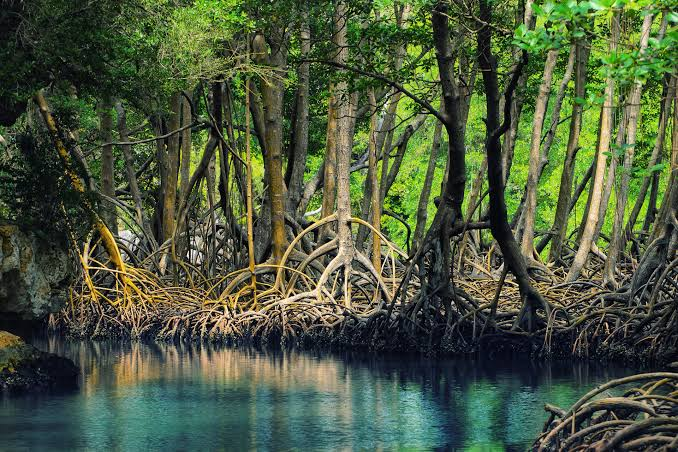{e.currentTarget.src="LINK_GDRIVE_FOTO_MANGROVE_DI_SINI"}}/><div className="card-body"><h3 className="font-bold text-lg text-green-800">Hutan Mangrove (Bakau)</h3><p className="text-sm text-gray-700 mt-2">Ekosistem hutan yang mendominasi kawasan pesisir atau pantai.</p><p className="text-sm mt-2"><b>Persebaran:</b> Pantai Timur Sumatra, pantai Barat dan Selatan Kalimantan, serta pantai Barat dan Utara Jawa.</p><span className="region-tag">Wilayah Asiatis</span></div></article>
                          <article className="flora-fauna-card">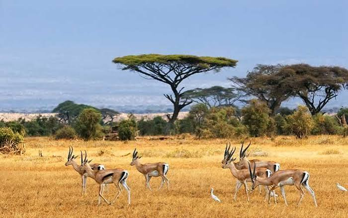{e.currentTarget.src="LINK_GDRIVE_FOTO_SABANA_DI_SINI"}}/><div className="card-body"><h3 className="font-bold text-lg text-green-800">Sabana dan Stepa</h3><p className="text-sm text-gray-700 mt-2">Sabana adalah padang rumput luas dengan tumbuhan kayu yang tersebar. Stepa merupakan tanah kering yang ditumbuhi semak belukar. Vegetasi yang dapat mendominasi antara lain palm, cemara, dan pinus.</p><p className="text-sm mt-2"><b>Persebaran:</b> Kepulauan Nusa Tenggara dan sekitarnya.</p><span className="region-tag">Wilayah Peralihan</span></div></article>
                          <article className="flora-fauna-card">{e.currentTarget.src="LINK_GDRIVE_FOTO_ANGGREK_DI_SINI"}}/><div className="card-body"><h3 className="font-bold text-lg text-green-800">Anggrek dan Sagu</h3><p className="text-sm text-gray-700 mt-2">Flora yang mendominasi kawasan hutan hujan tropis bagian timur. Karakteristiknya memiliki kesamaan sifat dan sejarah geologi dengan flora di Benua Australia; anggrek menjadi salah satu ciri khas kawasan ini.</p><p className="text-sm mt-2"><b>Persebaran:</b> Indonesia bagian Timur.</p><span className="region-tag">Wilayah Australis</span></div></article>
                          <article className="flora-fauna-card">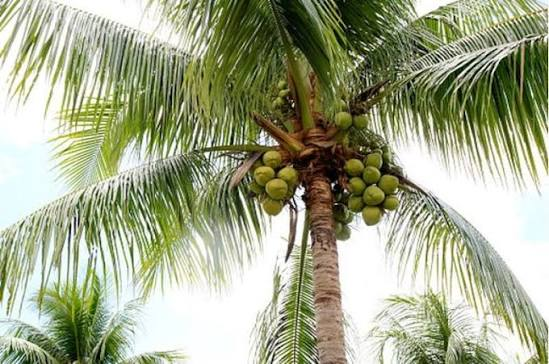{e.currentTarget.src="LINK_GDRIVE_FOTO_KELAPA_DI_SINI"}}/><div className="card-body"><h3 className="font-bold text-lg text-green-800">Kelapa</h3><p className="text-sm text-gray-700 mt-2">Memiliki batang tinggi tidak bercabang dan buah bersabut dengan tempurung keras. Hampir seluruh bagian pohonnya dapat dimanfaatkan. Tumbuh baik di pesisir, dataran rendah, iklim tropis, dan tanah berpasir.</p><p className="text-sm mt-2"><b>Persebaran:</b> Hampir seluruh wilayah pesisir Indonesia.</p><span className="region-tag">Asiatis hingga Australis</span></div></article>
                        </div>
                    </section>

                    <section className="material-section bg-white p-6 rounded-2xl shadow-md border-t-4 border-orange-500">
                        <h2 className="text-2xl font-bold text-orange-800 mb-2"><i className="fa-solid fa-paw mr-2"></i>Kartu Fauna Indonesia</h2>
                        <p className="text-gray-600 mb-5">Setiap wilayah memiliki fauna dengan ciri khas dan habitat yang berbeda.</p>
                        <div className="grid grid-cols-1 md:grid-cols-2 lg:grid-cols-3 gap-5">
                          <article className="flora-fauna-card">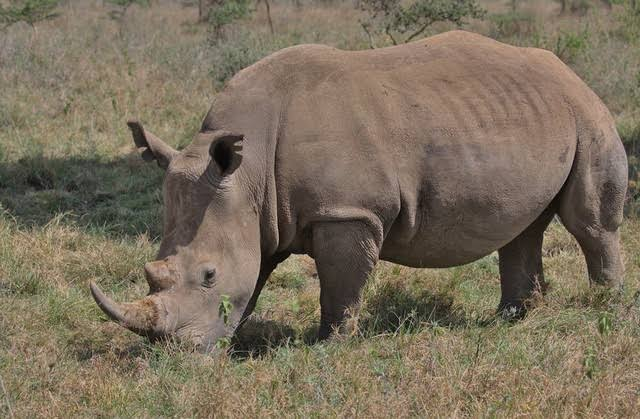{e.currentTarget.src="LINK_GDRIVE_FOTO_BADAK_DI_SINI"}}/><div className="card-body"><h3 className="font-bold text-lg text-orange-800">Badak Bercula Satu dan Orang Utan</h3><p className="text-sm text-gray-700 mt-2">Mamalia besar yang menjadi fauna khas wilayah Barat. Di ekosistemnya juga dapat dijumpai berbagai jenis kera dan ikan air tawar.</p><p className="text-sm mt-2"><b>Persebaran:</b> Badak Jawa di Jawa; orang utan di Sumatra dan Kalimantan beserta pulau kecil di sekitarnya.</p><span className="region-tag">Wilayah Asiatis</span></div></article>
                          <article className="flora-fauna-card">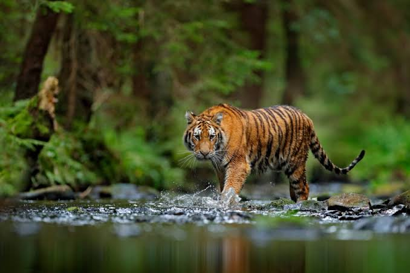{e.currentTarget.src="LINK_GDRIVE_FOTO_HARIMAU_DI_SINI"}}/><div className="card-body"><h3 className="font-bold text-lg text-orange-800">Harimau Sumatra</h3><p className="text-sm text-gray-700 mt-2">Karnivora penghuni hutan hujan tropis. Tubuhnya relatif lebih kecil dibandingkan jenis harimau lain, dengan bulu oranye dan belang hitam. Kelangsungan hidupnya bergantung pada hutan dan ketersediaan mangsa.</p><p className="text-sm mt-2"><b>Persebaran:</b> Sumatra, termasuk Aceh, Sumatra Utara, Riau, Jambi, Sumatra Barat, Bengkulu, Sumatra Selatan, dan Lampung.</p><span className="region-tag">Wilayah Asiatis</span></div></article>
                          <article className="flora-fauna-card">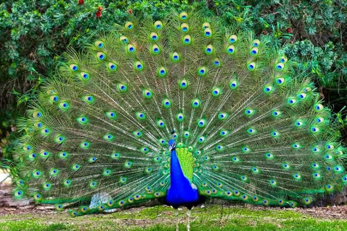{e.currentTarget.src="LINK_GDRIVE_FOTO_MERAK_DI_SINI"}}/><div className="card-body"><h3 className="font-bold text-lg text-orange-800">Burung Merak dan Jalak Bali</h3><p className="text-sm text-gray-700 mt-2">Dua jenis burung khas Indonesia bagian Barat; materi sumber menyebut keduanya sebagai satwa endemik di kawasan ini.</p><p className="text-sm mt-2"><b>Persebaran:</b> Indonesia bagian Barat.</p><span className="region-tag">Wilayah Asiatis</span></div></article>
                          <article className="flora-fauna-card">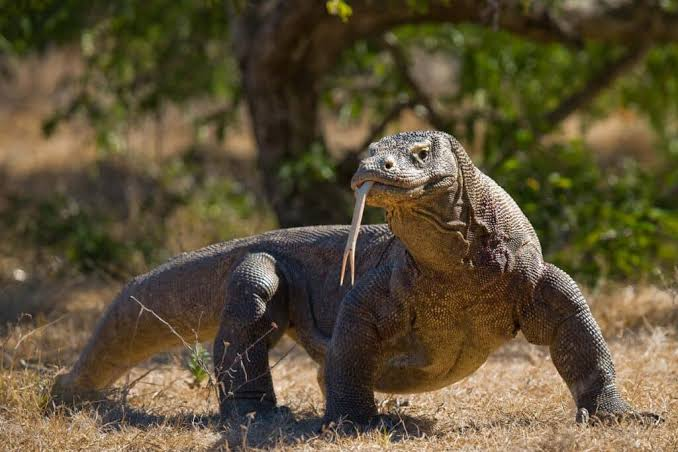{e.currentTarget.src="LINK_GDRIVE_FOTO_KOMODO_DI_SINI"}}/><div className="card-body"><h3 className="font-bold text-lg text-orange-800">Komodo, Anoa, Babirusa, dan Burung Maleo</h3><p className="text-sm text-gray-700 mt-2">Sekumpulan fauna khas kawasan peralihan dengan ciri unik yang membedakannya dari fauna wilayah Barat maupun Timur.</p><p className="text-sm mt-2"><b>Persebaran:</b> Sulawesi, Kepulauan Maluku, Nusa Tenggara, dan pulau sekitarnya.</p><span className="region-tag">Wilayah Peralihan</span></div></article>
                          <article className="flora-fauna-card">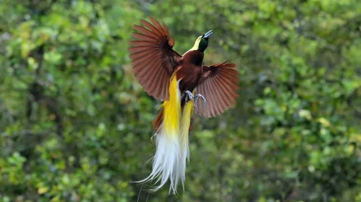{e.currentTarget.src="LINK_GDRIVE_FOTO_CENDRAWASIH_DI_SINI"}}/><div className="card-body"><h3 className="font-bold text-lg text-orange-800">Burung Cendrawasih dan Kasuari</h3><p className="text-sm text-gray-700 mt-2">Burung berbulu indah yang menjadi fauna endemik wilayah timur. Habitatnya memiliki karakteristik khas.</p><p className="text-sm mt-2"><b>Persebaran:</b> Papua, Kepulauan Aru, dan pulau kecil di sekitarnya.</p><span className="region-tag">Wilayah Australis</span></div></article>
                          <article className="flora-fauna-card">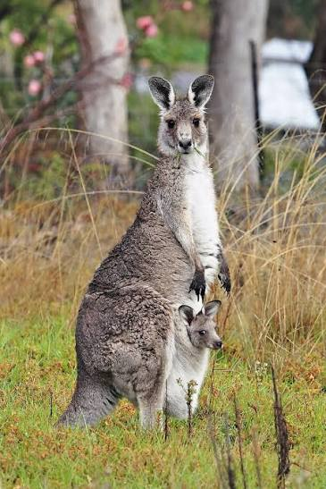{e.currentTarget.src="LINK_GDRIVE_FOTO_KANGGURU_DI_SINI"}}/><div className="card-body"><h3 className="font-bold text-lg text-orange-800">Kangguru</h3><p className="text-sm text-gray-700 mt-2">Mamalia berukuran relatif kecil dan termasuk kelompok hewan berkantung.</p><p className="text-sm mt-2"><b>Persebaran:</b> Papua, Kepulauan Aru, dan sekitarnya.</p><span className="region-tag">Wilayah Australis</span></div></article>
                        </div>
                    </section>

                    <div className="text-center mt-8">
                        <button 
                            onClick={onComplete}
                            className="bg-gradient-to-r from-blue-500 to-blue-600 hover:from-blue-600 hover:to-blue-700 text-white font-bold py-4 px-10 rounded-full shadow-lg transform hover:scale-105 transition duration-300 text-lg"
                        >
                            <i className="fa-solid fa-check-circle mr-2"></i> Selesai Membaca & Lanjut Kuis
                        </button>
                    </div>

                    <Modal data={selectedRegion} onClose={() => setSelectedRegion(null)} />
                </div>
            );
        };

        // 3. Kuis Component
        const Kuis = ({ onPass }) => {
            const [currentQ, setCurrentQ] = useState(0);
            const [score, setScore] = useState(0);
            const [isFinished, setIsFinished] = useState(false);
            const [selectedAnswer, setSelectedAnswer] = useState(null);

            const handleAnswer = (idx) => {
                setSelectedAnswer(idx);
                
                setTimeout(() => {
                    if (idx === quizQuestions[currentQ].answer) {
                        setScore(prev => prev + 10);
                    }
                    
                    if (currentQ < quizQuestions.length - 1) {
                        setCurrentQ(prev => prev + 1);
                        setSelectedAnswer(null);
                    } else {
                        // Calculate final score since React state update is async
                        const finalScore = score + (idx === quizQuestions[currentQ].answer ? 10 : 0);
                        setIsFinished(true);
                    }
                }, 800);
            };

            const retry = () => {
                setCurrentQ(0);
                setScore(0);
                setIsFinished(false);
                setSelectedAnswer(null);
            };

            if (isFinished) {
                const passed = score >= 70;
                return (
                    <div className="max-w-xl mx-auto bg-white p-8 rounded-3xl shadow-xl text-center fade-in border-4 border-yellow-400">
                        <div className="text-6xl mb-4">
                            {passed ? '🎉' : '💪'}
                        </div>
                        <h2 className="text-3xl font-bold mb-2 text-gray-800">Kuis Selesai!</h2>
                        <p className="text-xl mb-6">Skor Kamu: <span className={`font-bold text-4xl ${passed ? 'text-green-600' : 'text-red-500'}`}>{score}</span> / 100</p>
                        
                        {passed ? (
                            <div className="space-y-4">
                                <p className="text-green-600 font-bold bg-green-50 p-3 rounded-lg border border-green-200">Luar biasa! Kamu lulus kuis ini.</p>
                                <button onClick={() => onPass()} className="w-full bg-green-500 hover:bg-green-600 text-white font-bold py-4 px-8 rounded-xl shadow-lg transition transform hover:scale-105">
                                    Buka Halaman Refleksi <i className="fa-solid fa-unlock ml-2"></i>
                                </button>
                            </div>
                        ) : (
                            <div className="space-y-4">
                                <p className="text-red-500 font-bold bg-red-50 p-3 rounded-lg border border-red-200">Skormu belum mencapai KKM (70). Yuk coba lagi!</p>
                                <button onClick={retry} className="w-full bg-yellow-500 hover:bg-yellow-600 text-white font-bold py-4 px-8 rounded-xl shadow-lg transition">
                                    <i className="fa-solid fa-rotate-right mr-2"></i> Ulangi Kuis
                                </button>
                            </div>
                        )}
                    </div>
                );
            }

            const q = quizQuestions[currentQ];

            return (
                <div className="max-w-2xl mx-auto bg-white p-6 md:p-10 rounded-3xl shadow-xl fade-in border-4 border-purple-500 relative overflow-hidden">
                    <div className="absolute top-0 left-0 w-full h-2 bg-gray-200">
                        <div className="h-full bg-purple-500 transition-all duration-300" style={{ width: `${((currentQ) / quizQuestions.length) * 100}%` }}></div>
                    </div>
                    
                    <div className="flex justify-between items-center mb-6 mt-2">
                        <span className="bg-purple-100 text-purple-800 font-bold py-1 px-4 rounded-full text-sm">Soal {currentQ + 1} / {quizQuestions.length}</span>
                        <span className="font-bold text-gray-500"><i className="fa-solid fa-star text-yellow-400 mr-1"></i> Poin: {score}</span>
                    </div>

                    <h2 className="text-xl md:text-2xl font-bold text-gray-800 mb-8">{q.q}</h2>

                    <div className="space-y-3">
                        {q.options.map((opt, idx) => {
                            let btnStyle = "w-full text-left p-4 rounded-xl border-2 font-semibold transition-all ";
                            if (selectedAnswer === null) {
                                btnStyle += "border-gray-200 hover:border-purple-500 hover:bg-purple-50 text-gray-700";
                            } else {
                                if (idx === q.answer) {
                                    btnStyle += "border-green-500 bg-green-100 text-green-800";
                                } else if (idx === selectedAnswer) {
                                    btnStyle += "border-red-500 bg-red-100 text-red-800";
                                } else {
                                    btnStyle += "border-gray-200 opacity-50";
                                }
                            }

                            return (
                                <button 
                                    key={idx}
                                    onClick={() => selectedAnswer === null && handleAnswer(idx)}
                                    className={btnStyle}
                                    disabled={selectedAnswer !== null}
                                >
                                    <span className="inline-block w-8 h-8 rounded-full bg-white border shadow-sm text-center leading-8 mr-3 text-sm">
                                        {String.fromCharCode(65 + idx)}
                                    </span>
                                    {opt}
                                </button>
                            );
                        })}
                    </div>
                </div>
            );
        };

        // 4. Refleksi (LKPD) Component
        const Refleksi = () => {
            return (
                <div className="max-w-4xl mx-auto bg-white p-8 rounded-3xl shadow-xl fade-in border-4 border-teal-500">
                    <div className="text-center mb-8">
                        <h2 className="text-3xl font-bold text-teal-800 mb-2"><i className="fa-solid fa-clipboard-list mr-2"></i>Tugas LKPD (Refleksi)</h2>
                        <p className="text-gray-600">Selamat! Kamu telah menyelesaikan materi dan kuis. Sekarang saatnya berkreasi!</p>
                    </div>

                    <div className="bg-teal-50 p-6 rounded-2xl border border-teal-200 shadow-inner">
                        <h3 className="text-xl font-bold text-teal-900 mb-4">Instruksi: Membuat Kartu Identitas Flora/Fauna</h3>
                        <p className="mb-4 text-gray-700">Buatlah sebuah <strong>Kartu Identitas (ID Card)</strong> untuk satu jenis flora ATAU fauna asli Indonesia yang paling kamu sukai. Kartu ini dapat digambar di buku tulis atau didesain menggunakan aplikasi (seperti Canva).</p>
                        
                        <h4 className="font-bold text-gray-800 mt-6 mb-2">Informasi yang harus ada di dalam kartu:</h4>
                        <ul className="list-disc pl-6 space-y-2 text-gray-700 font-medium">
                            <li><i className="fa-solid fa-tag text-teal-500 mr-2 w-4"></i><strong>Nama Flora/Fauna:</strong> (Nama lokal & Nama ilmiah jika tahu)</li>
                            <li><i className="fa-solid fa-map-pin text-red-500 mr-2 w-4"></i><strong>Asal Wilayah:</strong> (Asiatis / Peralihan / Australis dan sebutkan pulaunya)</li>
                            <li><i className="fa-solid fa-magnifying-glass text-blue-500 mr-2 w-4"></i><strong>Ciri-ciri Fisik:</strong> (Jelaskan keunikannya secara singkat)</li>
                            <li><i className="fa-solid fa-tree text-green-500 mr-2 w-4"></i><strong>Faktor Alam:</strong> (Mengapa dia cocok hidup di wilayah tersebut? Hubungkan dengan Iklim/Tanah/Relief)</li>
                            <li><i className="fa-solid fa-shield-heart text-pink-500 mr-2 w-4"></i><strong>Status Konservasi:</strong> (Apakah langka/dilindungi? Apa pesanamu untuk menjaganya?)</li>
                            <li><i className="fa-solid fa-image text-purple-500 mr-2 w-4"></i><strong>Gambar:</strong> (Boleh digambar tangan atau ditempel foto)</li>
                        </ul>
                    </div>

                    <div className="mt-8 text-center bg-gray-100 p-4 rounded-xl">
                        <p className="font-bold text-gray-600"><i className="fa-solid fa-user-graduate mr-2"></i>Kumpulkan tugas ini kepada Guru mata pelajaranmu pada pertemuan berikutnya!</p>
                    </div>
                </div>
            );
        };

        // --- MAIN APP ---
        const App = () => {
            // State Management for conditional unlocking
            const [locks, setLocks] = useState({
                materi: false,   // Start unlocked
                kuis: true,      // Start locked
                refleksi: true   // Start locked
            });
            const [activeTab, setActiveTab] = useState('materi');

            // Logic to handle transitioning states based on user progression
            const handleMateriComplete = () => {
                setLocks({ materi: true, kuis: false, refleksi: true });
                setActiveTab('kuis');
                window.scrollTo({ top: 0, behavior: 'smooth' });
            };

            const handleKuisPassed = () => {
                setLocks({ materi: false, kuis: true, refleksi: false });
                setActiveTab('refleksi');
                window.scrollTo({ top: 0, behavior: 'smooth' });
            };

            const switchTab = (tab) => {
                if (!locks[tab]) {
                    setActiveTab(tab);
                }
            };

            return (
                <div className="min-h-screen flex flex-col">
                    {/* Header & Nav */}
                    <header className="bg-white shadow-md sticky top-0 z-40">
                        <div className="bg-gradient-to-r from-emerald-600 to-teal-700 text-white p-6 text-center">
                            <h1 className="text-3xl font-extrabold drop-shadow-md"><i className="fa-solid fa-leaf mr-2 text-green-300"></i>Eksplorasi Flora & Fauna Indonesia</h1>
                        </div>
                        
                        <nav className="flex justify-center max-w-3xl mx-auto border-b">
                            {/* Materi Tab */}
                            <button 
                                onClick={() => switchTab('materi')}
                                disabled={locks.materi}
                                className={`tab-btn flex-1 py-4 font-bold text-lg border-b-4 ${activeTab === 'materi' ? 'border-blue-500 text-blue-600 bg-blue-50' : 'border-transparent text-gray-500 hover:bg-gray-50'} ${locks.materi ? 'bg-gray-100 text-gray-400' : ''}`}
                            >
                                <i className={`fa-solid ${locks.materi ? 'fa-lock' : 'fa-book-open'} mr-2`}></i> Materi
                            </button>
                            
                            {/* Kuis Tab */}
                            <button 
                                onClick={() => switchTab('kuis')}
                                disabled={locks.kuis}
                                className={`tab-btn flex-1 py-4 font-bold text-lg border-b-4 ${activeTab === 'kuis' ? 'border-purple-500 text-purple-600 bg-purple-50' : 'border-transparent text-gray-500 hover:bg-gray-50'} ${locks.kuis ? 'bg-gray-100 text-gray-400' : ''}`}
                            >
                                <i className={`fa-solid ${locks.kuis ? 'fa-lock' : 'fa-gamepad'} mr-2`}></i> Kuis
                            </button>
                            
                            {/* Refleksi Tab */}
                            <button 
                                onClick={() => switchTab('refleksi')}
                                disabled={locks.refleksi}
                                className={`tab-btn flex-1 py-4 font-bold text-lg border-b-4 ${activeTab === 'refleksi' ? 'border-teal-500 text-teal-600 bg-teal-50' : 'border-transparent text-gray-500 hover:bg-gray-50'} ${locks.refleksi ? 'bg-gray-100 text-gray-400' : ''}`}
                            >
                                <i className={`fa-solid ${locks.refleksi ? 'fa-lock' : 'fa-lightbulb'} mr-2`}></i> Refleksi
                            </button>
                        </nav>
                    </header>

                    {/* Main Content Area */}
                    <main className="flex-grow container mx-auto px-4 py-8">
                        {activeTab === 'materi' && <Materi onComplete={handleMateriComplete} />}
                        {activeTab === 'kuis' && <Kuis onPass={handleKuisPassed} />}
                        {activeTab === 'refleksi' && <Refleksi />}
                    </main>
                    
                    {/* Footer */}
                    <footer className="bg-gray-800 text-gray-300 py-6 text-center text-sm">
                        <p>&copy; Media Pembelajaran Interaktif IPS SMP - Flora & Fauna Indonesia</p>
                    </footer>
                </div>
            );
        };

        const root = ReactDOM.createRoot(document.getElementById('root'));
        root.render(<App />);
    </script>
</body>
</html>